Mixed Pixel Filter
Abstract
We call mixed pixels pixels resulting from a mixed signal from foreground and background planes (typically, the pixel “lands” partially on an object and partially on its background). Such pixels don’t represent the distance measurement to either object and lie somewhere in between (they appear to be flying, and we sometimes refer to them as flying pixels). The mixed-pixel filter invalidates these pixels. The mixedPixelFilterMode setting defines whether this filter is activated and which validation methods is used. mixedPixelFilterMode = 1 switches to angle validation check (adjust it with mixedPixelThresholdRad). mixedPixelFilterMode = 2 switches to distance based validation check (this mode is inherited from previous algorithm versions and will most likely be deprecated in the future). mixedPixelFilterMode = 0 switches the filter off completely.
We recommend either disabling the filter (more precision on objects’ edges) or using the angle based validation method (mixedPixelFilterMode = 1) to remove pixels between objects and their backgrounds.
Description
The mixedPixelFilterMode controls two different methods for invalidation mixed pixels.
Angle based validation method
The angle based mixed pixel filtering (mixedPixelFilterMode = 1) is based on the idea of estimating, for each pixel, the angle between the optical and an approximate tangent plane on the object (at this exact pixel coordinate). If the angle difference is larger than the allowed angle threshold, the pixel is invalidated.
The angle threshold of this mode is controlled by the parameter mixedPixelThresholdRad (angle in radians).
Distance based validation method (will be deprecated)
The second version of the mixed pixel (mixedPixelFilterMode = 2) filter is centered around the idea of comparing distances in the local neighborhood of a pixel. The distance of the pixel is compared in horizontal and vertical direction against its neighboring pixels’ distance values. If the distance differences are outside a threshold (set internally), the pixel is invalidated.
Examples
Different angle threshold values
To show the impact of adjusting the mixed pixel filter with the mixedPixelThresholdRad, we show a scene where two boxes are placed in front of the camera, at around one and two meters. The table below shows the distance image and the point cloud with the filter inactive and filter in the angle mode with different angle thresholds:
Note: settings
mixedPixelThresholdRad = 0is equivalent to turning the filter off.
Value of |
Distance image |
Point cloud |
|---|---|---|
0 (equivalent to |
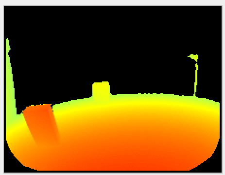 |
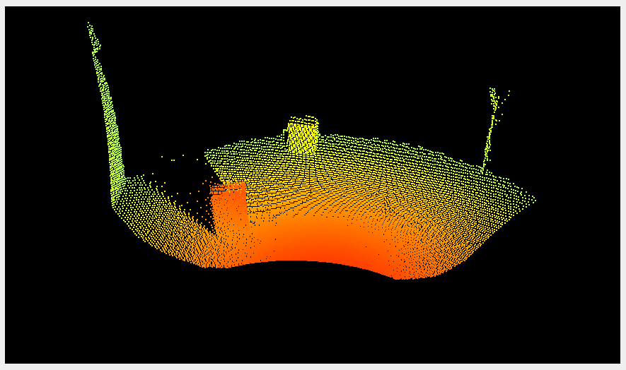 |
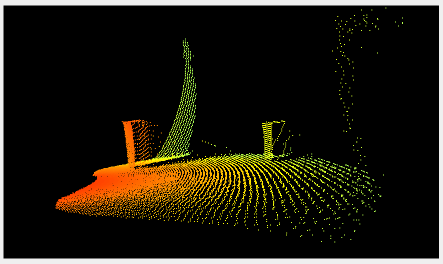 |
||
0.15 (default) |
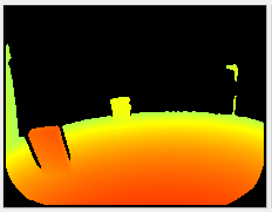 |
|
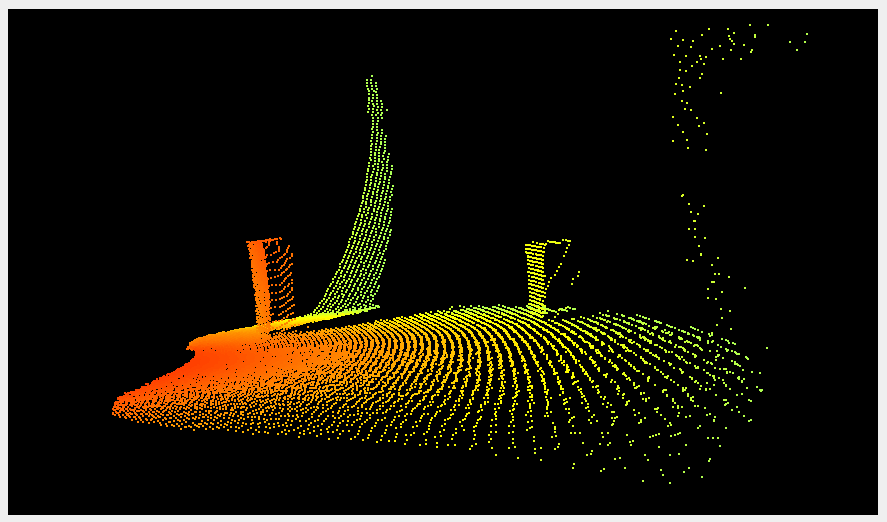 |
||
0.3 |
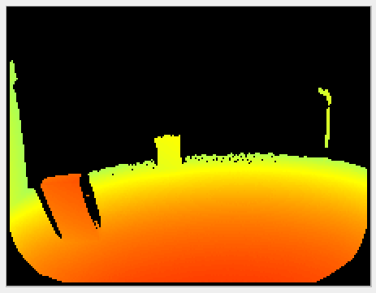 |
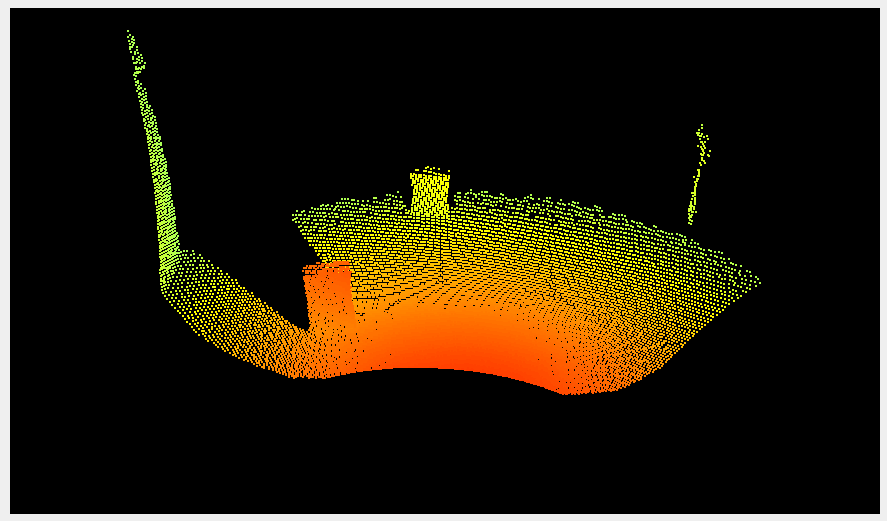 |
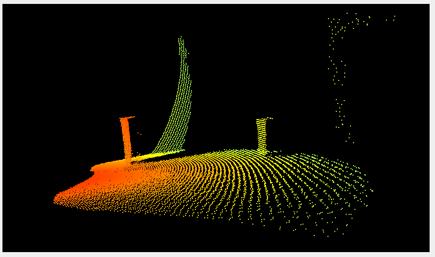 |
||
0.5 |
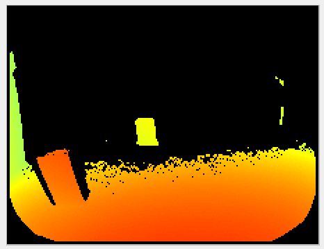 |
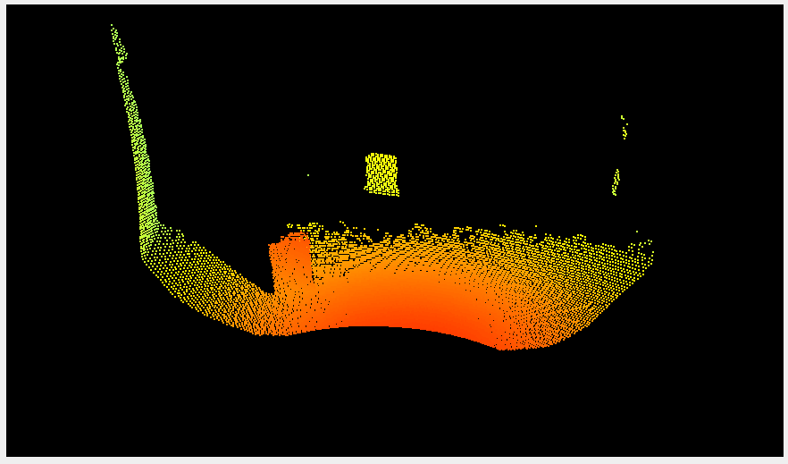 |
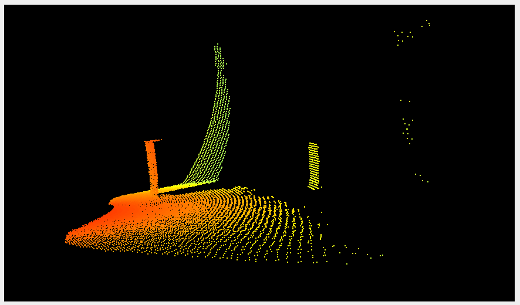 |
We can see that using higher values for the mixedPixelThresholdRad invalidates more pixels. We typically recommend deactivating the filter or using small values for the threshold.